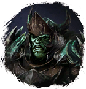
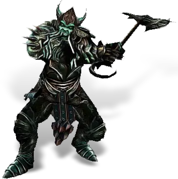

Открыть в интерактивной вики →

| Уровень | лёгк. 175 / норм. 175 / тяжел. 215 |
|---|---|
| Зоны атаки | ближняя, дальняя, ментальная |
| Шанс дропа 100% — уровни | лёгк. 1-135 / норм. 1-135 / тяжел. 140+ |
| Шанс дропа 90% — уровни | лёгк. 136+ / норм. -- / тяжел. -- |
| Шанс дропа 70% — уровни | -- |
| Группа боссов | Ужас |
| Сила (PvE) | норм. 19 063 / тяжел. 26 386 |
| Аспект | Solnai |
| Здоровье | лёгк. 60 000 / норм. 60 000 / тяжел. 90 000 |
| Мана | 25 000 |
| Выносливость | 25 000 |
Локация
Команда


Навыки


Дроп
 Двигг
Двигг  Реол
Реол  Алмазный ингибитор
Алмазный ингибитор  Андилунировый ингибитор
Андилунировый ингибитор  Платиновый ингибитор
Платиновый ингибитор  Эссенция
Эссенция  Ворлинский Дукат
Ворлинский Дукат  Глиф Подмастерья
Глиф Подмастерья 
 Путь ужаса
Путь ужаса 


 V-X
V-X  Гроссмейстерский глиф
Гроссмейстерский глиф  Даймонит 250
Даймонит 250 | Рары | Синергетики | Эпики | |||
 Рары Рары  Рары Рары  Рары Рары  Рары Рары | 80-110 ур. |  Эпики Эпики | |||
Прочее:  Ворлинский Дукат Ворлинский Дукат  Глиф Подмастерья Глиф Подмастерья  Путь ужаса Путь ужаса  Реол Реол  Двигг Двигг  Платиновый ингибитор Платиновый ингибитор  Алмазный ингибитор Алмазный ингибитор  Эссенция Эссенция | |||||
Требования для входа

Путь по картам
Умения
 Мощный Удар Мощный Удар — смертельный удар
Мощный Удар Мощный Удар — смертельный удар- Бросок
 Транс Транс — разрыв корней, укол куклы
Транс Транс — разрыв корней, укол куклы
Иммунитеты / особые умения
| Устойчивость к кровотечению Устойчивость перед лицом смерти Устойчивость к обездвиживанию Устойчивость к рубящему урону Устойчивость к дробящему урону Устойчивость к колющему урону |